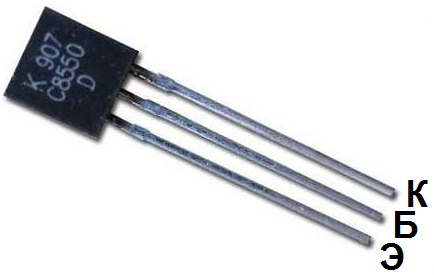

Транзистор C8550
Транзисторы C8550 - кремниевые, структуры p-n-p. Тип корпуса - TO-92. Маркировка буквенно - цифровая.
Комплементарной парой для C8550 является транзистор C8050 c n-p-n структурой.

Рис. 1 - Внешний вид транзистора C8550
Таблица 1
| Параметр | Значение |
|---|---|
| Максимальное напряжение коллектор-база | 40 В |
| Максимальное напряжение эмиттер-база | 6 В |
| Максимальное напряжение коллектор-эмиттер | 25 В |
| Максимальный постоянный ток коллектора | 1,5 А |
| Статический коэффициент передачи тока: | |
| C8550B | 85 ... 160 |
| C8550C | 120 ... 200 |
| C8550D | 160 ... 300 |
| Граничная частота коэффициента передачи тока для схем с ОЭ | 200 МГц |
| Максимальная рассеиваемая мощность | 1 Вт |
| Обратный ток коллектора | 100 нА |
| Рабочая температура | -65...+150 °C |